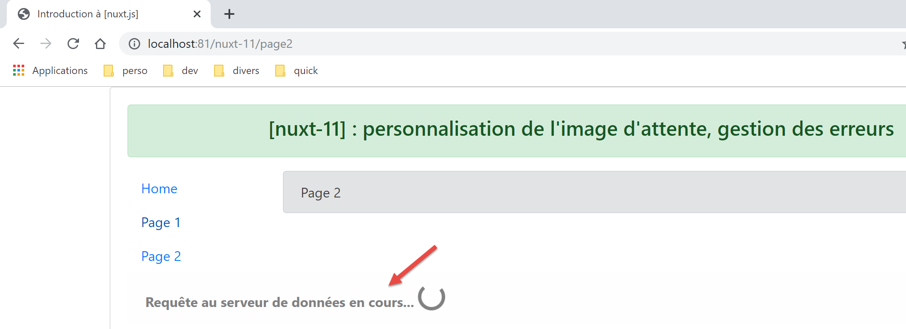
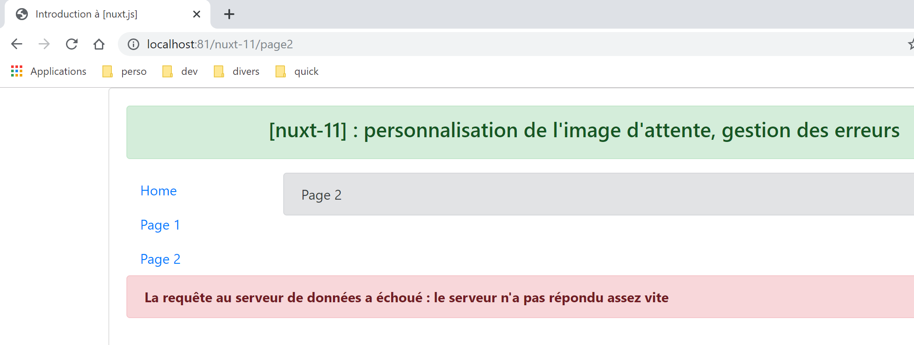
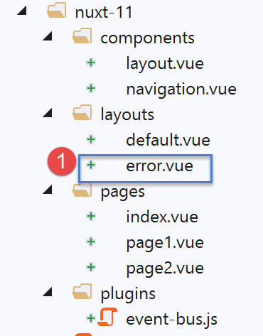
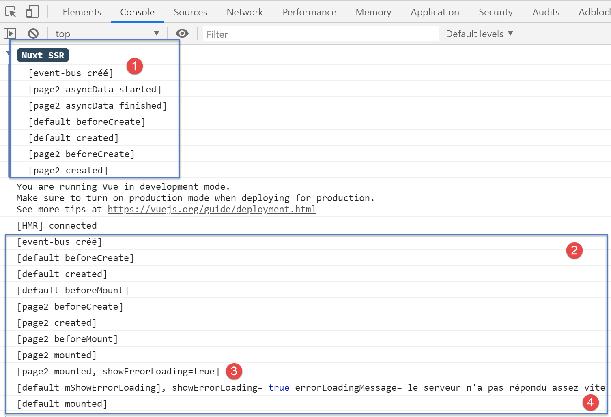
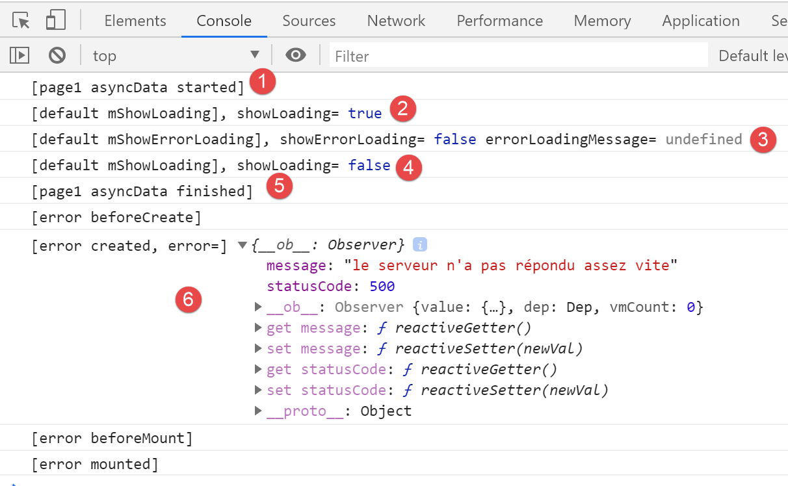

14. Esempio [nuxt-11]: Personalizzazione dell'immagine di caricamento
Per impostazione predefinita, l'immagine di caricamento di [nuxt] è una barra di avanzamento. L'esempio [nuxt-11] mostra che è possibile sostituirla con una propria immagine di caricamento:

L'esempio [nuxt-11] mostra anche come gestire gli errori di caricamento.

L'esempio [nuxt-11] deriva inizialmente dall'esempio [nuxt-10]:

In [1], aggiungeremo un plugin per il client che si occuperà di gestire gli eventi tra i componenti.
14.1. Il plugin [event-bus]
Il plugin [event-bus] verrà eseguito sia dal client che dal server, ma vedremo che non funziona sul lato server. Il suo codice è il seguente:
// on crée un bus d'événements entre les vues
import Vue from 'vue'
export default (context, inject) => {
// le bus d'événements
const eventBus = new Vue()
// injection d'une fonction [eventBus] dans le contexte
inject('eventBus', () => eventBus)
}
- riga 5: l'event bus è un'istanza della classe [Vue]. Questa classe fornisce metodi per la gestione degli eventi:
- [$emit]: per emettere un evento;
- [$on]: per ascoltare un evento specifico;
Questo event bus gestirà un solo evento, [loading], che verrà utilizzato dalle pagine per avviare/interrompere l'animazione di caricamento mentre si attende il completamento di una funzione asincrona;
- riga 7: creiamo una funzione [$eventBus] (primo argomento) il cui ruolo sarà quello di restituire l'oggetto [eventBus] che abbiamo appena creato (secondo argomento). Questa funzione viene iniettata nel contesto in modo che sia disponibile negli oggetti [context.app] e [this] delle pagine;
14.2. Il layout [default.vue]
Il layout [default.vue] si evolve come segue:
<template>
<div class="container">
<b-card>
<!-- un message -->
<b-alert show variant="success" align="center">
<h4>[nuxt-11] : personnalisation de l'attente, gestion des erreurs</h4>
</b-alert>
<!-- la vue courante du routage -->
<nuxt />
<!-- loading -->
<b-alert v-if="showLoading" show variant="light">
<strong>Requête au serveur de données en cours...</strong>
<div class="spinner-border ml-auto" role="status" aria-hidden="true"></div>
</b-alert>
<!-- erreur de chargement -->
<b-alert v-if="showErrorLoading" show variant="danger">
<strong>La requête au serveur de données a échoué : {{ errorLoadingMessage }}</strong>
</b-alert>
</b-card>
</div>
</template>
<script>
/* eslint-disable no-console */
export default {
name: 'App',
data() {
return {
showLoading: false,
showErrorLoading: false
}
},
// life cycle
beforeCreate() {
console.log('[default beforeCreate]')
},
created() {
console.log('[default created]')
// listen to the evt [loading]
this.$eventBus().$on('loading', this.mShowLoading)
// and the [errorLoadingMessage] event
this.$eventBus().$on('errorLoading', this.mShowErrorLoading)
},
beforeMount() {
console.log('[default beforeMount]')
},
mounted() {
console.log('[default mounted]')
},
methods: {
// load management
mShowLoading(value) {
console.log('[default mShowLoading], showLoading=', value)
this.showLoading = value
},
// loading error
mShowErrorLoading(value, errorLoadingMessage) {
console.log('[default mShowErrorLoading], showErrorLoading=', value, 'errorLoadingMessage=', errorLoadingMessage)
this.showErrorLoading = value
this.errorLoadingMessage = errorLoadingMessage
}
}
}
</script>
- righe 11–14: l'animazione di caricamento. Viene visualizzata solo se la proprietà [showLoading] è true (riga 29);
- righe 16–18: il messaggio di errore di caricamento. Viene visualizzato solo se la proprietà [showErrorLoading] (riga 30) è true;
- righe 29-30: quando il componente viene caricato inizialmente, l'animazione di caricamento è nascosta, così come il messaggio di errore;
- righe 37–43: una volta creata, la pagina ascolta l'evento [loading] (primo argomento) sul bus di eventi creato dal plugin. Una volta ricevuto, esegue il metodo [mShowLoading] nelle righe 52–55 (secondo argomento);
- righe 52–55: il valore ricevuto dal metodo [mShowLoading] sarà un valore booleano (vero/falso). Viene utilizzato per mostrare o nascondere il messaggio di caricamento;
- righe 41–42: quando la pagina viene creata, ascolta l'evento [errorLoading] (primo argomento) sul bus di eventi creato dal plugin. Una volta ricevuto, esegue il metodo [mShowErrorLoading] nelle righe 57–61 (secondo argomento);
- riga 57: il metodo [mShowErrorLoading] accetta due argomenti:
- il primo argomento è un valore booleano (vero/falso) per mostrare o nascondere il messaggio di errore;
- il secondo argomento è presente solo se si è verificato un errore. Rappresenta il messaggio di errore da visualizzare;
- I log alle righe 53 e 58 ci mostreranno che i metodi [showLoading] e [showErrorLoading] non vengono eseguiti sul lato server;
14.3. La pagina [page1]
Il codice della pagina [page1] cambia come segue:
<!-- vue n° 1 -->
<template>
<Layout :left="true" :right="true">
<!-- navigation -->
<Navigation slot="left" />
<!-- message-->
<b-alert slot="right" show variant="primary"> Page 1 -- result={{ result }} </b-alert>
</Layout>
</template>
<script>
/* eslint-disable no-console */
/* eslint-disable nuxt/no-timing-in-fetch-data */
import Navigation from '@/components/navigation'
import Layout from '@/components/layout'
export default {
name: 'Page1',
// components used
components: {
Layout,
Navigation
},
// asynchronous data
asyncData(context) {
// log
console.log('[page1 asyncData started]')
// start waiting
context.app.$eventBus().$emit('loading', true)
// no error
context.app.$eventBus().$emit('errorLoading', false)
// we make a promise
return new Promise(function(resolve, reject) {
// we simulate an asynchronous function
setTimeout(function() {
// end waiting
context.app.$eventBus().$emit('loading', false)
// log
console.log('[page1 asyncData finished]')
// we make the result asynchronous - a random number here
resolve({ result: Math.floor(Math.random() * Math.floor(100)) })
}, 5000)
})
},
// life cycle
beforeCreate() {
console.log('[page1 beforeCreate]')
},
created() {
console.log('[page1 created]')
},
beforeMount() {
console.log('[page1 beforeMount]')
},
mounted() {
console.log('[page1 mounted]')
}
}
</script>
- Le modifiche si trovano nella funzione [asyncData] alle righe 26–47;
- righe 29–30: prima che la funzione asincrona abbia inizio, l'evento [loading] viene emesso alle altre pagine dell'applicazione. Si noti che in [asyncData] non abbiamo ancora accesso all'oggetto [this], che non è stato ancora creato. Utilizziamo quindi il contesto passato come argomento alla funzione [asyncData] (riga 26);
- riga 30: il bus di eventi viene utilizzato per indicare che il caricamento sta per iniziare;
- riga 38: utilizziamo l'event bus per indicare che il caricamento è completato;
Nota: in fase di esecuzione, quando la pagina [page1] viene richiesta al server, l'immagine di caricamento non viene visualizzata. Nei log, vediamo che sul lato server il metodo [default.mShowLoading] non viene chiamato. In ogni caso, visualizzare l'immagine di caricamento non ha senso quando la pagina viene richiesta al server. Il server invia la pagina al browser del client solo una volta che la funzione [asyncData] è terminata. L'immagine di caricamento è quindi superflua. Questo vale per tutte le pagine dell'applicazione richieste direttamente dal server.
14.4. La pagina [index]
Il codice per la pagina [index] è il seguente:
<!-- page principale -->
<template>
<Layout :left="true" :right="true">
<!-- navigation -->
<Navigation slot="left" />
<!-- message-->
<b-alert slot="right" show variant="warning">
Home
</b-alert>
</Layout>
</template>
<script>
/* eslint-disable no-undef */
/* eslint-disable no-console */
/* eslint-disable nuxt/no-env-in-hooks */
/* eslint-disable nuxt/no-timing-in-fetch-data */
import Navigation from '@/components/navigation'
import Layout from '@/components/layout'
export default {
name: 'Home',
// components used
components: {
Layout,
Navigation
},
// asynchronous data
asyncData(context) {
// log
console.log('[page1 asyncData started]')
// start waiting
context.app.$eventBus().$emit('loading', true)
// no error
context.app.$eventBus().$emit('errorLoading', false)
// we make a promise
return new Promise(function(resolve, reject) {
// we simulate an asynchronous function
setTimeout(function() {
// end waiting
context.app.$eventBus().$emit('loading', false)
// log
console.log('[page1 asyncData finished]')
// we return an error
reject(new Error("le serveur n'a pas répondu assez vite"))
}, 5000)
}).catch((e) => context.error({ statusCode: 500, message: e.message }))
},
// life cycle
beforeCreate() {
console.log('[home beforeCreate]')
},
created() {
console.log('[home created]')
},
beforeMount() {
console.log('[home beforeMount]')
},
mounted() {
console.log('[home mounted]')
// no error
this.$eventBus().$emit('errorLoading', false)
}
}
</script>
- righe 30–49: la funzione [asyncData] è identica a quella nella pagina [page1], con un'eccezione: alla riga 46, la funzione asincrona viene interrotta in caso di errore (utilizzando il metodo [reject]);
- riga 46: il parametro della funzione [reject] è un'istanza della classe [Error]. Il parametro del costruttore [Error] è il messaggio di errore;
- riga 48: questo errore viene intercettato dal metodo [catch] di [Promise], che riceve l'errore come parametro. Utilizziamo quindi la funzione [context.error] per segnalare l'errore. Il parametro della funzione [context.error] è un oggetto con due proprietà:
- [statusCode]: un codice di errore HTTP;
- [message]: un messaggio di errore;
Sia che [asyncData] venga eseguito dal client o dal server, in caso di [context.error], [nuxt] visualizza la pagina [layouts/error.vue]:

Sebbene si tratti di una pagina, la pagina [error.vue] viene cercata nella cartella [layouts] (forse per evitare che venga inclusa nei percorsi dell'applicazione?). Qui, la pagina [error.vue] è la seguente:
<!-- définition HTML de la vue -->
<template>
<!-- mise en page -->
<Layout :left="true" :right="true">
<!-- alerte dans la colonne de droite -->
<template slot="right">
<!-- message sur fond jaune -->
<b-alert show variant="danger" align="center">
<h4>L'erreur suivante s'est produite : {{ JSON.stringify(error) }}</h4>
</b-alert>
</template>
<!-- menu de navigation dans la colonne de gauche -->
<Navigation slot="left" />
</Layout>
</template>
<script>
/* eslint-disable no-undef */
/* eslint-disable no-console */
/* eslint-disable nuxt/no-env-in-hooks */
import Layout from '@/components/layout'
import Navigation from '@/components/navigation'
export default {
name: 'Error',
// components used
components: {
Layout,
Navigation
},
// property [props]
props: { error: { type: Object, default: () => 'waiting ...' } },
// life cycle
beforeCreate() {
// client and server
console.log('[error beforeCreate]')
},
created() {
// client and server
console.log('[error created, error=]', this.error)
},
beforeMount() {
// customer only
console.log('[error beforeMount]')
},
mounted() {
// customer only
console.log('[error mounted]')
}
}
</script>
Quando [nuxt] rende la pagina [error.vue], passa l'errore verificatosi come proprietà [props] (riga 33). Se l'errore è stato causato da [context.error(object1)], la proprietà [props] della pagina [error.vue] avrà il valore [object1]. La documentazione di [nuxt] afferma che [object1] deve avere almeno gli attributi [statusCode, message]. La riga 9 visualizza la stringa JSON dell'oggetto [object1] ricevuto.
14.5. La pagina [page2]
La pagina [page2] mostra un altro modo per gestire l'errore:
- in [page1], l'errore viene visualizzato in una pagina separata [error.vue];
- in [page2], l'errore verrà visualizzato nella pagina [page2] che ha causato l'errore;
Il codice per [pagina2] è il seguente:
<!-- vue n° 2 -->
<template>
<Layout :left="true" :right="true">
<!-- navigation -->
<Navigation slot="left" />
<!-- message -->
<b-alert slot="right" show variant="secondary">
Page 2
</b-alert>
</Layout>
</template>
<script>
/* eslint-disable no-console */
/* eslint-disable nuxt/no-timing-in-fetch-data */
import Navigation from '@/components/navigation'
import Layout from '@/components/layout'
export default {
name: 'Page2',
// components used
components: {
Layout,
Navigation
},
// asynchronous data
asyncData(context) {
// log
console.log('[page2 asyncData started]')
// start waiting
context.app.$eventBus().$emit('loading', true)
// no error
context.app.$eventBus().$emit('errorLoading', false)
// we make a promise
return new Promise(function(resolve, reject) {
// we simulate an asynchronous function
setTimeout(function() {
// end waiting
context.app.$eventBus().$emit('loading', false)
// arbitrarily generate an error
const errorLoadingMessage = "le serveur n'a pas répondu assez vite"
// successful completion
resolve({ showErrorLoading: true, errorLoadingMessage })
// log
console.log('[page2 asyncData finished]')
}, 5000)
})
},
// life cycle
beforeCreate() {
console.log('[page2 beforeCreate]')
},
created() {
console.log('[page2 created]')
},
beforeMount() {
console.log('[page2 beforeMount]')
},
mounted() {
console.log('[page2 mounted]')
// customer
if (this.showErrorLoading) {
console.log('[page2 mounted, showErrorLoading=true]')
this.$eventBus().$emit('errorLoading', true, this.errorLoadingMessage)
}
}
}
</script>
Ancora una volta, inseriamo una funzione [asyncData] nel codice della pagina e, come [index], [page2] genererà un errore che questa volta gestiremo in modo diverso.
- riga 44: sia il server che il client risolvono correttamente la promessa restituendo il risultato [{ showErrorLoading: true, errorLoadingMessage }]. Sappiamo che ciò includerà le proprietà [showErrorLoading, errorLoadingMessage] nelle proprietà [data] della pagina e che il client riceverà queste proprietà;
- righe 60–67: sappiamo che la funzione [mounted] viene eseguita solo dal client;
- riga 63: il client verifica se la proprietà [showErrorLoading] è stata impostata (dal server o dal client, a seconda dei casi). In tal caso, emette l'evento [‘errorLoading’] (riga 65) in modo che la pagina [default] visualizzi il messaggio di errore [this.errorLoadingMessage]. Infine, il server invia una pagina senza che venga visualizzato alcun messaggio di errore. Il messaggio di errore viene visualizzato all’ultimo momento dal client quando la pagina viene ‘montata’;
14.6. Esecuzione
14.6.1. [nuxt.config]
Il file di runtime [nuxt.config.js] è il seguente:
export default {
mode: 'universal',
/*
** Headers of the page
*/
head: {
title: 'Introduction à [nuxt.js]',
meta: [
{ charset: 'utf-8' },
{ name: 'viewport', content: 'width=device-width, initial-scale=1' },
{
hid: 'description',
name: 'description',
content: 'ssr routing loading asyncdata middleware plugins store'
}
],
link: [{ rel: 'icon', type: 'image/x-icon', href: '/favicon.ico' }]
},
/*
** Customize the progress-bar color
*/
loading: false,
/*
** Global CSS
*/
css: [],
/*
** Plugins to load before mounting the App
*/
plugins: [{ src: '@/plugins/event-bus' }],
/*
** Nuxt.js dev-modules
*/
buildModules: [
// Doc: https://github.com/nuxt-community/eslint-module
'@nuxtjs/eslint-module'
],
/*
** Nuxt.js modules
*/
modules: [
// Doc: https://bootstrap-vue.js.org
'bootstrap-vue/nuxt',
// Doc: https://axios.nuxtjs.org/usage
'@nuxtjs/axios'
],
/*
** Axios module configuration
** See https://axios.nuxtjs.org/options
*/
axios: {},
/*
** Build configuration
*/
build: {
/*
** You can extend webpack config here
*/
extend(config, ctx) {}
},
// source code directory
srcDir: 'nuxt-11',
// router
router: {
// application URL root
base: '/nuxt-11/'
},
// server
server: {
// service port, default 3000
port: 81,
// network addresses listened to, default localhost: 127.0.0.1
// 0.0.0.0 = all the machine's network addresses
host: 'localhost'
}
}
- riga 22: imposta la proprietà [loading] su [false] in modo che [nuxt] non utilizzi la sua immagine di caricamento predefinita;
- riga 31: il plugin che definisce l'event bus;
14.6.2. La pagina [index] fornita dal server
Richiediamo la pagina [index] dal server (digitando manualmente l'URL [http://localhost:81/nuxt-11/]). La pagina visualizzata dal browser del client è la seguente:

I log sono i seguenti:

- in [3], vediamo che il server invia la pagina [error.vue];
- In [4], vediamo che anche il client visualizza la pagina [error] con lo stesso errore del server;
- possiamo notare che il metodo [mShowLoading] della pagina [default] non è stato chiamato sul lato server, anche se la pagina [index] aveva attivato un'attesa. Questo metodo viene chiamato alla ricezione di un evento, ed è evidente che la gestione degli eventi non è implementata sul lato server;
Esaminiamo il codice sorgente della pagina ricevuta dal browser del client:
<!doctype html>
<html data-n-head-ssr>
<head>
<title>Introduction à [nuxt.js]</title>
<meta data-n-head="ssr" charset="utf-8">
<meta data-n-head="ssr" name="viewport" content="width=device-width, initial-scale=1">
<meta data-n-head="ssr" data-hid="description" name="description" content="ssr routing loading asyncdata middleware plugins store">
<link data-n-head="ssr" rel="icon" type="image/x-icon" href="/favicon.ico">
<base href="/nuxt-11/">
<link rel="preload" href="/nuxt-11/_nuxt/runtime.js" as="script">
<link rel="preload" href="/nuxt-11/_nuxt/commons.app.js" as="script">
<link rel="preload" href="/nuxt-11/_nuxt/vendors.app.js" as="script">
<link rel="preload" href="/nuxt-11/_nuxt/app.js" as="script">
...
</head>
<body>
<div data-server-rendered="true" id="__nuxt">
<div id="__layout">
<div class="container">
<div class="card">
<div class="card-body">
<div role="alert" aria-live="polite" aria-atomic="true" align="center" class="alert alert-success">
<h4>[nuxt-11] : personnalisation de l'attente, gestion des erreurs</h4>
</div>
<div>
<div class="row">
<div class="col-2">
<ul class="nav flex-column">
<li class="nav-item">
<a href="/nuxt-11/" target="_self" class="nav-link active nuxt-link-active">
Home
</a>
</li>
<li class="nav-item">
<a href="/nuxt-11/page1" target="_self" class="nav-link">
Page 1
</a>
</li>
<li class="nav-item">
<a href="/nuxt-11/page2" target="_self" class="nav-link">
Page 2
</a>
</li>
</ul>
</div> <div class="col-10"><div role="alert" aria-live="polite" aria-atomic="true" align="center" class="alert alert-danger">
<h4>L'erreur suivante s'est produite : {"statusCode":500,"message":"le serveur n'a pas répondu assez vite"}</h4>
</div>
</div>
</div>
</div>
</div>
</div>
</div>
</div>
</div>
<script>window.__NUXT__ = (function (a, b, c, d) {
d.statusCode = 500; d.message = "le serveur n'a pas répondu assez vite";
return {
layout: "default", data: [d], error: d, serverRendered: true,
logs: [
{ date: new Date(1575047424168), args: ["[event-bus créé]"], type: a, level: b, tag: c },
{ date: new Date(1575047424175), args: ["[page1 asyncData started]"], type: a, level: b, tag: c },
{ date: new Date(1575047429455), args: ["[page1 asyncData finished]"], type: a, level: b, tag: c },
{ date: new Date(1575047429515), args: ["[default beforeCreate]"], type: a, level: b, tag: c },
{ date: new Date(1575047429675), args: ["[default created]"], type: a, level: b, tag: c },
{ date: new Date(1575047430157), args: ["[error beforeCreate]"], type: a, level: b, tag: c },
{ date: new Date(1575047430246), args: ["[error created, error=]", "{ statusCode: 500,\n message: 'le serveur n\\'a pas répondu assez vite' }"], type: a, level: b, tag: c }]
}
}("log", 2, "", {}));</script>
<script src="/nuxt-11/_nuxt/runtime.js" defer></script>
<script src="/nuxt-11/_nuxt/commons.app.js" defer></script>
<script src="/nuxt-11/_nuxt/vendors.app.js" defer></script>
<script src="/nuxt-11/_nuxt/app.js" defer></script>
</body>
</html>
- riga 57: vediamo che il server ha inviato un oggetto [d] che rappresenta l'errore verificatosi sul lato server;
- riga 59: vediamo una proprietà [error] il cui valore è l'oggetto [d]. Possiamo supporre che sia la presenza della proprietà [error] nella pagina inviata dal server a far sì che gli script lato client visualizzino la pagina [error.vue] con l'errore [error];
14.6.3. La pagina [page1] eseguita dal server
Digitiamo manualmente l'URL [http://localhost:81/nuxt-11/page1]. Dopo 5 secondi, il browser visualizza la seguente pagina:

I log visualizzati sono i seguenti:

- in [1], i log del server. Si noti che il metodo [mShowLoading] della pagina [default] non è stato chiamato;
- in [2], i log del client;
14.6.4. La pagina [page2] eseguita dal server
Digitiamo manualmente l'URL [http://localhost:81/nuxt-11/page2]. Dopo 5 secondi, il browser visualizza la seguente pagina:

Esaminiamo i log visualizzati nel browser:

- in [1], i log del server. Ricordiamo che il server ha incluso le proprietà [showErrorLoading, errorLoadingMessage] nella pagina inviata al browser del client. Sappiamo che queste proprietà saranno poi incluse nei [data] della pagina visualizzata dal client
- in [3], quando la pagina [page2] viene caricata, trova la proprietà [showErrorLoading] impostata su true. Invia quindi un evento alla pagina [default], in modo che visualizzi il messaggio di errore inviato dal server [4];
14.6.5. La pagina [index] eseguita dal client
Ora utilizziamo i link di navigazione per visualizzare le tre pagine. Tutte le pagine visualizzate dal client sono identiche a quelle visualizzate dal server. L'unica differenza è che ogni volta viene visualizzata l'immagine di caricamento di 5 secondi.
Iniziamo con la pagina [index]. Viene quindi visualizzata l'immagine di caricamento:

poi, dopo 5 secondi, appare la pagina seguente:

La pagina finale è quindi identica a quella ottenuta sul lato server.

Ricordiamo la funzione [asyncData] nella pagina [index]:
asyncData(context) {
// log
console.log('[page1 asyncData started]')
// start waiting
context.app.$eventBus().$emit('loading', true)
// no error
context.app.$eventBus().$emit('errorLoading', false)
// we make a promise
return new Promise(function(resolve, reject) {
// we simulate an asynchronous function
setTimeout(function() {
// end waiting
context.app.$eventBus().$emit('loading', false)
// log
console.log('[page1 asyncData finished]')
// we return an error
reject(new Error("le serveur n'a pas répondu assez vite"))
}, 5000)
}).catch((e) => context.error({ statusCode: 500, message: e.message }))
}
I log del client sono i seguenti:
- in [1], viene avviata la funzione [asyncData];
- in [2], viene visualizzata l'immagine di caricamento;
- in [2-3], vediamo che la pagina [default] ha ricevuto gli eventi [loading, true] [2] e [errorLoading, false] inviati dalla funzione [asyncData] della pagina [index] (righe 5 e 7);
- in [4], l'attesa termina. La pagina [default] ha ricevuto l'evento [loading, false] inviato dalla pagina [index] (riga 13);
- In [5], la funzione [asyncData] ha terminato il suo lavoro;
- poiché la funzione [asyncData] ha generato un errore con [context.error] (riga 19), viene visualizzata la pagina [error] [6];
14.6.6. La pagina [page1] eseguita dal client
Dopo aver atteso 5 secondi, il client visualizza la seguente pagina:

Rivediamo il codice della funzione [asyncData] da [page1]:
asyncData(context) {
// log
console.log('[page1 asyncData started]')
// start waiting
context.app.$eventBus().$emit('loading', true)
// no error
context.app.$eventBus().$emit('errorLoading', false)
// we make a promise
return new Promise(function(resolve, reject) {
// we simulate an asynchronous function
setTimeout(function() {
// end waiting
context.app.$eventBus().$emit('loading', false)
// log
console.log('[page1 asyncData finished]')
// we make the result asynchronous - a random number here
resolve({ result: Math.floor(Math.random() * Math.floor(100)) })
}, 5000)
})
},
I log sono i seguenti:

14.6.7. La pagina [page2] eseguita dal client
Dopo un'attesa di 5 secondi, il client visualizza la seguente pagina:

Esaminiamo il codice delle funzioni [asyncData] e [mounted] in [page2]:
asyncData(context) {
// log
console.log('[page2 asyncData started]')
// start waiting
context.app.$eventBus().$emit('loading', true)
// no error
context.app.$eventBus().$emit('errorLoading', false)
// we make a promise
return new Promise(function(resolve, reject) {
// we simulate an asynchronous function
setTimeout(function() {
// end waiting
context.app.$eventBus().$emit('loading', false)
// arbitrarily generate an error
const errorLoadingMessage = "le serveur n'a pas répondu assez vite"
// successful completion
resolve({ showErrorLoading: true, errorLoadingMessage })
// log
console.log('[page2 asyncData finished]')
}, 5000)
})
}
mounted() {
console.log('[page2 mounted]')
// customer
if (this.showErrorLoading) {
console.log('[page2 mounted, showErrorLoading=true]')
this.$eventBus().$emit('errorLoading', true, this.errorLoadingMessage)
}
}
I log sono i seguenti:

- In [1], la pagina [default] ha ricevuto l'evento [showErrorLoading, true] inviato da [page2] (riga 29), che le indica di visualizzare il messaggio di errore;